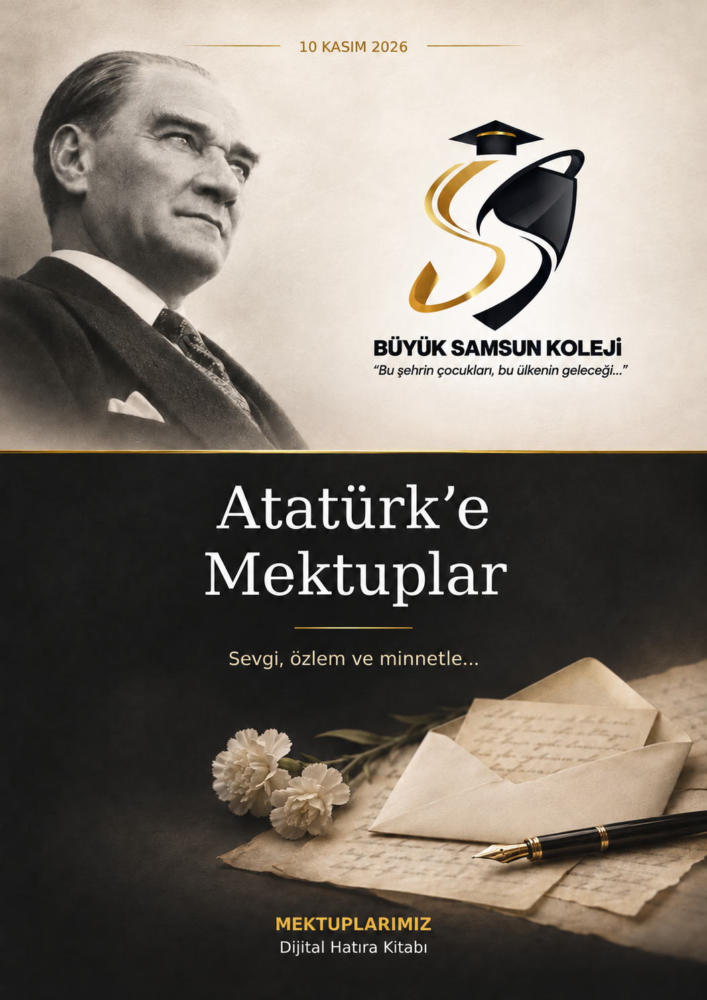

iPhone / iPad: Bağlantıyı Safari’de açın. Paylaş menüsünden Ana Ekrana Ekle seçeneğine dokunun. Görünüyorsa “Web Uygulaması Olarak Aç”ı etkinleştirip Ekle’ye basın.
Android: Chrome menüsünden Uygulamayı yükle veya Ana ekrana ekle seçeneğini kullanın.
Mektuplar, özgün tarama görüntüleriyle sunulmaktadır.